Cómo se decide el aspecto de una página y dónde va cada cosa.
←→ para moverte ·P pantalla completa · rueda del ratón o clic en el índice
Unidad 2
Contenidos de la unidad
Catorce sesiones, cuatro de práctica en el ordenador. Todos partís de la misma página, la de SuperTuxKart. Al terminar tendrás dos hojas de estilo: una con lo básico y otra con el estilo que tú elijas.
Antes. La página «Mi videojuego favorito» de SuperTuxKart, sin CSS: es la base de la práctica. Elaboración propia; capturas del juego de los autores de SuperTuxKart, CC BY-SA 4.0. Clic para ver la página entera.
Antes. Sin CSS, el navegador aplica su estilo por defecto: letra Times New Roman, texto negro sobre fondo blanco, todo en una columna.
Después. La misma página con una hoja de estilo de ejemplo. Elaboración propia; capturas del juego de los autores de SuperTuxKart, CC BY-SA 4.0 y CC BY 3.0. Clic para ver la página entera.
Después. Una hoja de estilo de unas 170 líneas: paleta, tipografía, cabecera, menú, dos columnas, galería y versión móvil.
Pregunta a la clase
¿Qué hace esta web que la tuya no hace?
Abrimos la web de GTA VI (rockstargames.com/VI) y hacemos scroll. Fíjate en lo que se mueve y en lo que aparece.
Qué hay detrás
●Colores, letras y tamaños: CSS.
●Cosas que se mueven y bloques que aparecen al llegar: también CSS.
●El HTML de debajo es el mismo que sabes escribir: encabezados, párrafos, imágenes y enlaces.
Concepto clave
CSS
Cascading Style Sheets, hojas de estilo en cascada. HTML dice qué es cada cosa; CSS dice cómo se ve.
Para consultar cualquier propiedad: MDN, developer.mozilla.org.
Lenguaje que dice cómo se ve una página HTML: colores, letra, tamaños, espacios y dónde va cada cosa.
Una sola hoja sirve para todas las páginas de la web.
Qué es CSS
Anatomía de una regla
Una hoja de estilo es una lista de reglas. Cada regla dice a qué elementos se aplica y qué aspecto les da.
—El selector dice a qué elementos se aplica
—Entre llaves, propiedad, dos puntos, valor y punto y coma. Una por línea
—Sin el punto y coma o sin la llave de cierre, se pierde lo que viene detrás. El navegador no avisa
style.css
/* Título principal de la página */
h1 {
color: #041c3f;
font-size: 2.5rem;
text-align: center;
}
/* selector { propiedad: valor; } */
p {
line-height: 1.6;
}
Qué es CSS
Tu primera hoja de estilo en cinco pasos
1.Crea style.css en la misma carpeta que index.html
2.Enlázala: escribe el <link> dentro del <head>; en href, la ruta del archivo
3.Una regla para body con un color de fondo, y guarda
4.Recarga. Si no cambia nada, revisa la ruta del href y el nombre del archivo: minúsculas, sin espacios
5.Abre DevTools, pestaña Estilos, y comprueba que aparece tu archivo
4.Busca una declaración tachada. ¿Qué regla le ha ganado?
Selectores
Selectores: a quién afecta la regla
El selector elige los elementos. Con estos cuatro tienes casi todo lo que hace falta.
style.css
/* etiqueta: todos los p */
p { line-height: 1.6; }
/* clase: los que llevan class="destacado" */
.destacado { background: #a5e070; }
/* varios a la vez, separados por comas */
h1, h2 { color: #017ce9; }
/* uno dentro de otro (espacio): los a del nav */
nav a { color: white; background: #041c3f; }
—La clase se pone en el HTML: <p class="destacado">. Y en el CSS, con un punto delante
—nav a llega a los enlaces del menú; el del párrafo se queda como estaba
Comprueba lo aprendido
¿Qué regla pone en verde solo los enlaces del menú?
Cada vez sale un HTML distinto con una o varias líneas marcadas. Elige el selector que llega justo a lo marcado. Comprobar marca en el HTML lo que alcanza tu selector; Pista te dice de qué familia es; Resolver explica qué alcanzaba cada uno.
Estilo visual
Colores: por su nombre o en hexadecimal
color pinta el texto y background, el fondo. El color se escribe por su nombre o en hexadecimal: una almohadilla y seis cifras.
style.css
/* por su nombre */
.nombre { background: crimson; }
/* en hexadecimal */
.hex { background: #017ce9; }
/* el texto y el fondo de la página */
body {
color: #041c3f;
background: #fefefe;
}
—¿Te gusta un color de una imagen? En DevTools, el cuadradito de color junto al valor abre un selector con cuentagotas
Estilo visual
Que se lea: texto oscuro sobre claro, o al revés
Si el texto y el fondo se parecen, no se lee. Elige tus colores, pero comprueba el contraste.
En DevTools, el selector de color te dice el contraste del texto con su fondo, y si se lee bien.
Se lee
Azul marino sobre blanco.
No se lee
Gris claro sobre blanco.
Se lee
Verde sobre azul marino.
No se lee
Blanco sobre verde.
Estilo visual
La paleta: tus colores en un solo sitio
Escribe cada color una vez, con un nombre, en :root. Después úsalo con var() donde haga falta.
Para el navegador, cada elemento es un rectángulo con cuatro capas, de dentro afuera. Con ellas se calcula cuánto mide una caja y cuánto se separa de las demás.
—Contenido: el texto o la imagen. Su tamaño es width y height
—Relleno, padding: espacio entre el contenido y el borde. Tiene el mismo color de fondo que el contenido
—Borde, border: la línea que rodea la caja
—Margen, margin: separación con las cajas de al lado. Transparente
DevTools dibuja esta caja al pasar el ratón por cualquier elemento, con sus medidas.
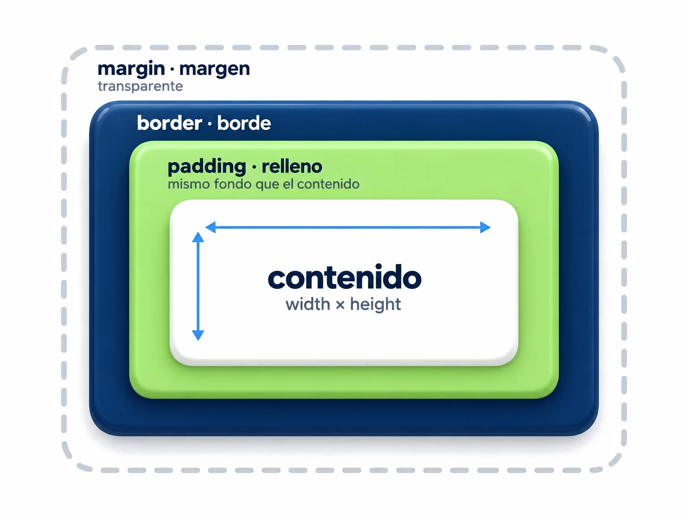
Figura 2.2. Elaboración propia, ilustrada con IA generativa (OpenAI gpt-image).
Figura 2.2. El modelo de caja. Es lo que DevTools enseña abajo del todo en la pestaña Estilos.
Cajas
Relleno, borde y margen
padding separa el contenido de su borde, border dibuja la línea y margin aparta la caja de las demás.
—Un valor vale para los cuatro lados. Para un solo lado o para cuatro valores distintos, la siguiente
—En tu página: main { max-width: 60rem; margin: 0 auto; }
Cajas
Un lado o los cuatro
margin, padding y border se escriben lado a lado o todo junto. En las páginas verás las dos formas.
1top arriba
2right derecha
3bottom abajo
4left izquierda
la caja
Con cuatro valores, este es el orden: empieza arriba y sigue como las agujas del reloj.
style.css
/* lado a lado */
.ficha {
padding-top: 1rem;
padding-right: 2rem;
padding-bottom: 1rem;
padding-left: 2rem;
}
/* todo junto: el mismo relleno */
.ficha { padding: 1rem 2rem; }
padding: 1rem
Los cuatro lados
padding: 1rem 2rem
Arriba y abajo, 1rem; los lados, 2rem
padding: 1rem 2rem 3rem 4rem
Arriba, derecha, abajo, izquierda
border-bottom: 1px solid
Solo la línea de abajo
Pruébalo
Mueve los valores y mira la ficha
La ficha técnica de SuperTuxKart. Cada deslizador cambia un lado; «los 4», los cuatro a la vez.
en el head: <link … href="style.css">h1 azul <style> h1 { color: red; } </style>
✓ <style> va después en el head
SuperTuxKart
5
La letra y el color se heredan
body { color: navy; }
✓ body lo heredan h1, p, li…
SuperTuxKart Un juego de karts.
Lo tachado pierde, igual que en la pestaña Estilos de DevTools.
Ejercicio interactivo
Completa la regla que falta
Cada vez sale una regla distinta con un hueco. Comprobar corrige, Pista te dice para qué es, Resolver lo rellena y Otro ejercicio cambia de regla. Cuenta los aciertos seguidos sin pista.
Práctica · Parte 1
Tu página, parte 1: cambia lo básico
Todos partís de la misma página, la de SuperTuxKart. Descarga la base, crea style.css en la carpeta parte1 y dale tus colores y tu letra. Todavía en una columna.
Lo que tiene que tener
✓La hoja enlazada, con el reset del curso al principio (está en la chuleta)
✓Tu paleta en :root:--background, --text, --accent, --accent-light
✓La letra:font-family y los tamaños de los títulos en rem
✓Espacios: cada zona centrada con max-width y margin: 0 auto, y con padding
✓Bordes: alguno con border o border-bottom, y esquinas con border-radius
✓Tu nombre en el pie: es el único cambio en el HTML
✓Cuaderno, en CodePen: ejercicio 1, la tarjeta de un videojuego
Una columna de 60rem centrada, el texto en azul marino sobre fondo casi blanco, letra sin serifa y los enlaces en azul. Clic en la imagen para verla entera.
La paleta
--background#fefefe
--text#041c3f
--accent#a5e070
--accent-light#e3ecf3
--border#d6e0ea
--link#017ce9
Es la paleta del ejemplo. La tuya, con tus colores: comprueba en DevTools que el texto se lee.
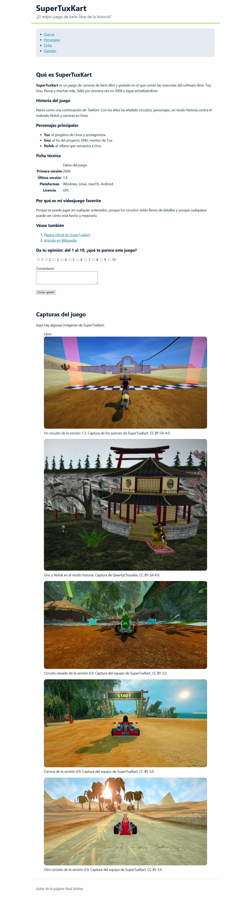
Maqueta 1. Elaboración propia. Capturas del juego de los autores de SuperTuxKart, CC BY-SA 4.0 y CC BY 3.0.
Figura 2.3. Maqueta 1, primera parte de la página. La captura completa está en Classroom.
Práctica
Antes de dar por buena una práctica
La hoja pasa el validador CSS sin errores: jigsaw.w3.org/css-validator
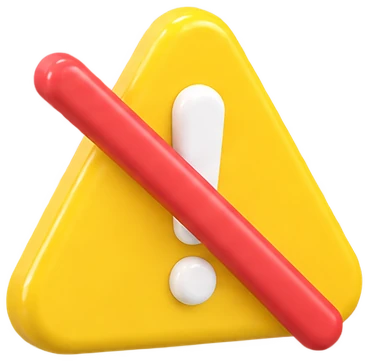
En DevTools no hay triángulos amarillos: nada que el navegador no entienda
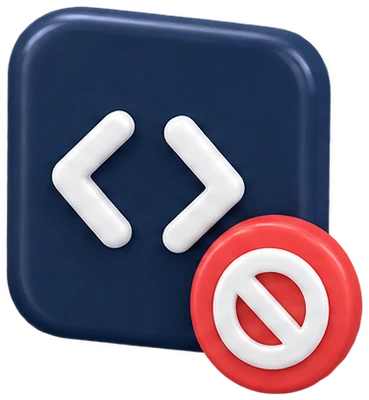
Cero atributos style en el HTML. Todo el aspecto está en style.css
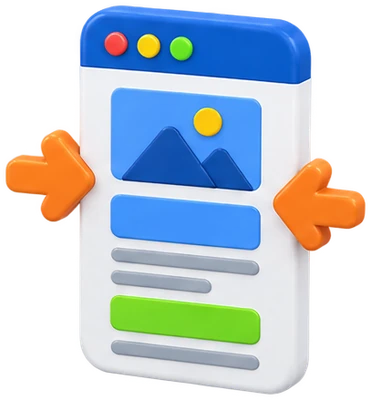
Se ve bien al estrechar la ventana: nada se sale por la derecha
Colocar
Colocar cosas: recetas que se copian y se adaptan
El menú en fila o la página en dos columnas no se escriben de memoria. Se copia una receta y se cambian sus valores.
—display: flex pone en fila lo que hay dentro: el menú
—display: grid hace una rejilla: las columnas y la galería
—En cada receta, las líneas marcadas son las que cambias
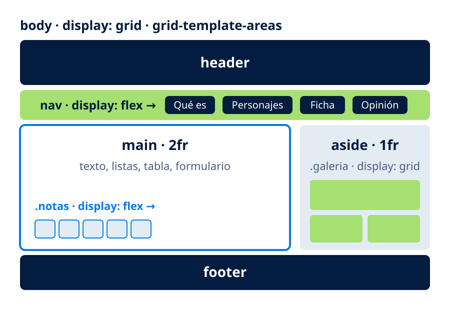
Figura 2.4. Elaboración propia.
Figura 2.4. La maqueta final de tu página: grid para las zonas y la galería, flex dentro del menú.
Receta 1
El menú, en fila
El menú de tu página es una lista de enlaces dentro del <nav>. Copia la receta y cambia las líneas marcadas.
style.css
nav { background: #a5e070; }
nav ul {
display: flex; /* en fila */
justify-content: center;
gap: 0.5rem;
list-style: none; /* sin viñetas */
margin: 0;
padding: 0;
}
nav a {
display: block;
padding: 0.75rem 1.25rem;
color: #041c3f;
text-decoration: none; /* sin subrayado */
}
nav a:hover { background: #041c3f; color: white; }
—justify-content decide dónde va la fila: flex-start, center o flex-end
—:hover es el enlace con el ratón encima
Receta 2
La tabla de la ficha
Relleno en las celdas, una línea fina bajo cada fila y las filas pares de otro color, como una cebra.
De las visitas a webs en España se hacen desde el móvil
Una página que solo se ve bien en el ordenador del aula no le sirve a más de la mitad de la gente que la abre. Por eso la maqueta final tiene dos versiones.
44 %
Desde el ordenador en España. Tableta, 1 %
49 / 49
En el mundo, móvil y ordenador están a la par
Fuente: StatCounter, Platform Market Share, España y mundo, agosto de 2026, gs.statcounter.com. Consultado el 12 de septiembre de 2026.
Receta 5
El móvil: una columna, y dos en el ordenador
Una media query es un bloque de reglas que solo se aplica a partir de un ancho de pantalla. La base es el móvil.
style.css
/* Base: el móvil. Una columna y el menú apilado */
body {
display: grid;
grid-template-areas:
"header" "nav" "main" "aside" "footer";
}
nav ul { display: flex; flex-direction: column; }
/* Desde 48rem: dos columnas y el menú en fila */
@media (min-width: 48rem) {
body {
grid-template-areas: "header header" "nav nav"
"main aside" "footer footer";
grid-template-columns: 2fr 1fr;
}
nav ul { flex-direction: row; }
}
—48rem son 768 px: a partir de ahí, la maqueta del ordenador
—Compruébalo con el modo dispositivo de DevTools
Responsive
Verlo como en el móvil: DevTools, modo dispositivo
En DevTools, el icono de móvil y tableta (o Ctrl+Mayús+M) muestra la página al ancho de un teléfono. Arriba eliges el dispositivo o escribes el ancho a mano.
—375 px es el ancho habitual de un móvil; 768, de una tableta
—Si aparece una barra de desplazamiento horizontal, algo desborda: busca el ancho fijo
—Úsalo en la parte 2 de la práctica: nada se debe salir a 375 px
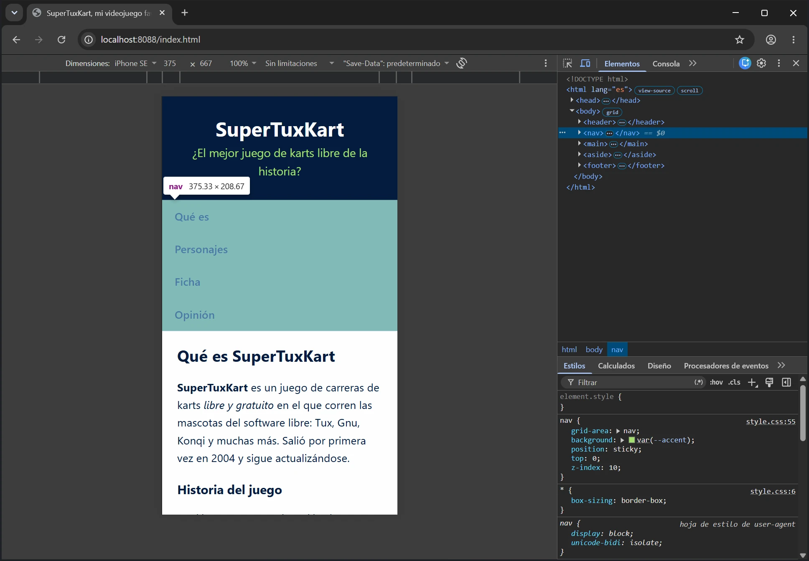
Modo dispositivo de las DevTools: la página de ejemplo a 375 px (iPhone SE), con el nav resaltado. Captura propia del 2 de noviembre de 2026.
Figura 2.5. El modo dispositivo de las DevTools. Arriba, el dispositivo y sus medidas. Haz clic para ampliar.
Comprueba lo aprendido
En la receta del menú, ¿qué cambias para llevar los enlaces a la derecha?
Selecciona una opción.
La IA y el diseño
Diseñar con IA: dirigir y revisar
Un asistente de IA escribe hoy una hoja de estilo entera a partir de una referencia: una web, una captura o un estilo con nombre. Tu trabajo es decirle qué quieres y revisar lo que entrega.
Tres mensajes, con el HTML de la UT1
1«Dale a esta página el estilo de la web de GTA VI, con un único archivo style.css.»
2«Conéctate a la web de Rockstar y analiza las transiciones, el texto que cambia de color, el degradado del fondo, las imágenes que avanzan con el scroll, los botones y las fuentes. Que quede igual.»
3«Pon en la portada un vídeo del juego que avance con el scroll e imágenes de Tux, Gnu y Nolok en sus tarjetas.»
Lo que revisas tú: que el HTML siga igual, las licencias de las imágenes, las fuentes de Google, en qué navegadores van las animaciones y el móvil: al bajar, el menú tapa los títulos.
localhost/videojuego/index.html
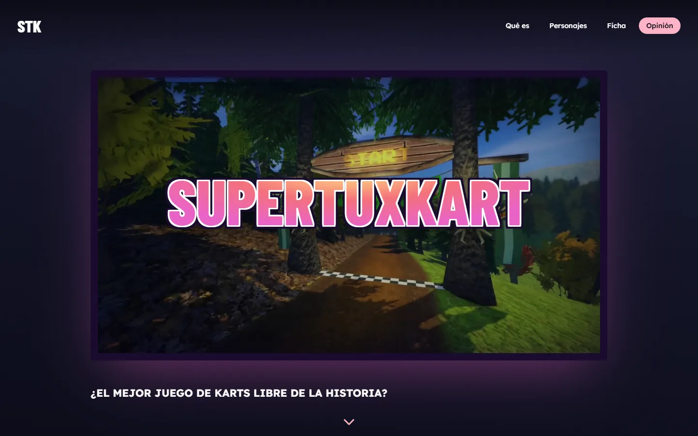
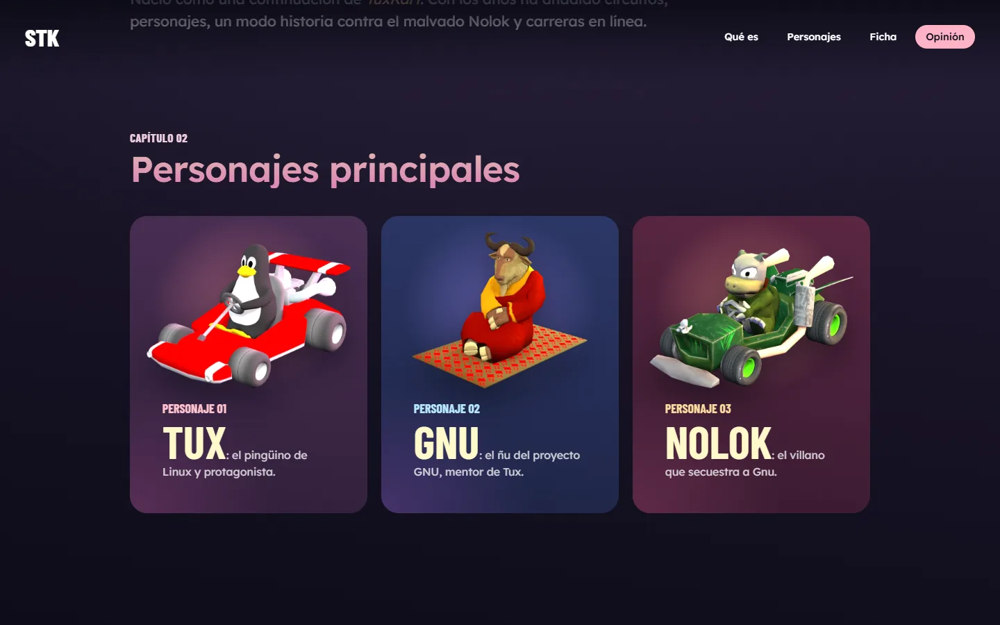
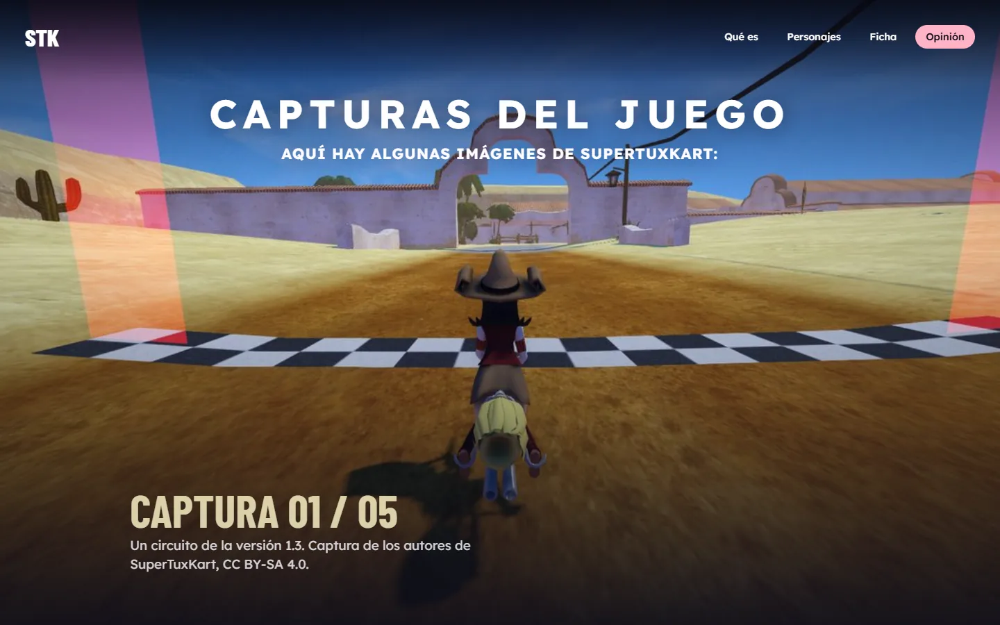
Figura 2.9. La página de la UT1 con el estilo de la web de GTA VI. Hecha con Claude Opus 5.5 el 3 de octubre de 2026: 1.229 líneas de CSS, sin JavaScript. Imágenes de SuperTuxKart con sus créditos al pie de la página.
La IA y el diseño
El vocabulario para pedir: estilos de diseño
Para dirigir a una IA, o a un diseñador, hay que saber nombrar lo que quieres. Seis estilos que verás en webs de hoy, cada uno con la línea de CSS que lo define.
SuperTuxKart
Jugar ahora
Minimalista · minimal
Mucho espacio en blanco, una sola letra y casi sin color: lo único que destaca es el contenido.
font-weight: 300
SuperTuxKartJugar
Neobrutalismo · neubrutalism
Bordes negros gruesos, sombras duras sin difuminar y colores chillones.
box-shadow: 6px 6px 0 #000
SuperTuxKart Jugar
Cristal · glassmorphism
Paneles translúcidos que desenfocan lo de detrás. Apple lo llamó Liquid Glass en 2025.
backdrop-filter: blur(12px)
SuperTuxKartJugar
Neumorfismo · neumorphism
Relieve suave del mismo color que el fondo, con una sombra clara y otra oscura.
Fondo oscuro, neón y letra de máquina recreativa, como los juegos de los ochenta.
text-shadow: 0 0 8px #ff4fd8
Bento · bento grid
Tarjetas de distintos tamaños en una rejilla, como los compartimentos de una fiambrera.
grid-template-columns: 2fr 1fr 1fr
Cómo se pide: un estilo con nombre, una referencia (la dirección de una web o una captura), lo que no se toca (el HTML) y qué debe entregar (un único style.css). Referencias de diseño: awwwards.com, dribbble.com.
¿Y los frameworks? Tailwind da clases ya hechas que ordenan el código y es el que más usa la IA; Bootstrap va a menos. Aquí, CSS sin framework: es lo que tocarás en WordPress.
Práctica · Parte 2
Tu página, parte 2: freestyle
Copia tu carpeta parte1 y llámala parte2. En su style.css, dale el estilo que quieras: con las recetas, con un estilo de diseño o con IA.
Lo que tiene que tener
✓Un estilo reconocible: minimalista, neobrutalismo, retro arcade… o el tuyo
✓Un comentario al principio de la hoja: qué estilo buscas y, si usaste IA, qué le pediste
✓Que se vea bien en el móvil: nada se sale a 375 px en el modo dispositivo
✓Que el texto se lea: buen contraste
✓El HTML, igual: todo el cambio está en style.css
✓Publicada: sube la carpeta ut2 a tu GitHub
✓Cuaderno: ejercicio 2, la rejilla de personajes
Tiempo
2 sesiones
Entrega en Classroom
La carpeta ut2 en un .zip y la URL de la parte 2
✓ Puedes usar
IA, para escribir o mejorar tu CSS
Las cinco recetas de la unidad
Cualquier estilo o web de referencia
Entregas las dos hojas:parte1/style.css y parte2/style.css, cada una en su carpeta.
Práctica · Parte 2
Un ejemplo: la página con las cinco recetas
tuusuario.github.io
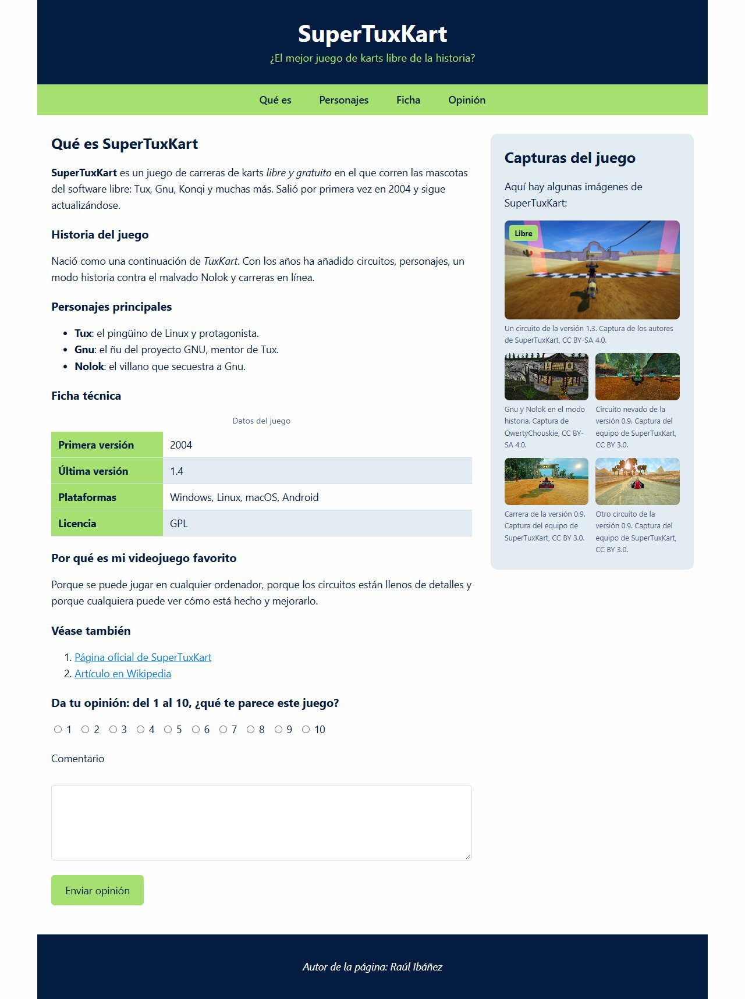
Maqueta 2, escritorio. Elaboración propia. Capturas del juego de los autores de SuperTuxKart, CC BY-SA 4.0 y CC BY 3.0.
Figura 2.6. A 1280 px: dos columnas, menú en fila, galería con la captura destacada. Recórrela con la rueda del ratón.
9:41
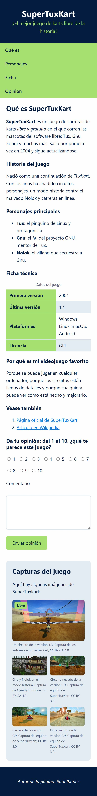
Maqueta 2, móvil. Elaboración propia. Capturas del juego de los autores de SuperTuxKart, CC BY-SA 4.0 y CC BY 3.0.
Figura 2.7. A 375 px: una columna y el menú apilado. Clic para verla en grande.
Práctica · Parte 2
Subir la versión final a GitHub Pages
1.Abre tu repositorio tuusuario.github.io
2.Botón + junto a Code, Upload files, y arrastra la carpeta ut2 entera, con las dos partes
3.Commit changes. Espera un minuto
4.Abre tuusuario.github.io/ut2/parte2/ en tu móvil. Si la hoja no carga: mayúsculas en el nombre o ruta del href distinta de la del archivo. En el servidor, Style.css y style.css son archivos distintos
Figura 2.8. Subir archivos desde la web de GitHub. Es lo mismo que hiciste en la UT1 con un solo archivo.
Ejercicio interactivo
Encuentra el error
Cada fragmento tiene un error. Pulsa la línea donde está y elige de qué tipo es. Pista te marca la línea; Resolver lo explica.
Los errores que más se repiten en las prácticas: el punto y coma que falta, la clase sin punto, y el valor sin unidad.
Ejercicio interactivo
Empareja cada propiedad con su efecto
A la izquierda, seis propiedades o valores; a la derecha, sus efectos, desordenados. Elige en el desplegable lo que hace cada uno. Comprobar corrige las seis, Pista resuelve una, Otro ejercicio cambia de juego.
Dos ejemplos resueltos
gap → Espacio entre los hijos de un flex o de un grid, sin márgenes
justify-content: center → Pone en el centro la fila de un flex
Examen
Examen de teoría
Test de opción múltiple, sin apuntes ni IA. Muchas preguntas llevan un trozo de código: «¿qué hace esta regla?», «¿qué valor cambias?».
Para prepararlo: el resumen y la chuleta (con su Modo repaso), los dos quiz y los cuatro ejercicios interactivos.
Qué entra
2.1Qué es CSS, la regla y DevTools
2.2Selectores, colores y la paleta
2.3Medidas, letra y cajas
2.5Las recetas: qué hace cada una y qué valor cambiar
Examen práctico
Mi película favorita
Recibes una página sobre una película ya colocada: menú, columnas y móvil están hechos. En su style.css, haz lo que piden los comentarios TAREA para que quede como la maqueta. El HTML no se toca.
Lo que tienes que cambiar
✓La paleta: los seis colores en :root, y el fondo y el texto con var()
✓La letra de los títulos:font-family y font-size
✓Los colores de títulos, enlaces y menú:color, text-decoration
✓Las líneas de la cabecera y el pie, y la caja del lateral:border, border-radius, padding